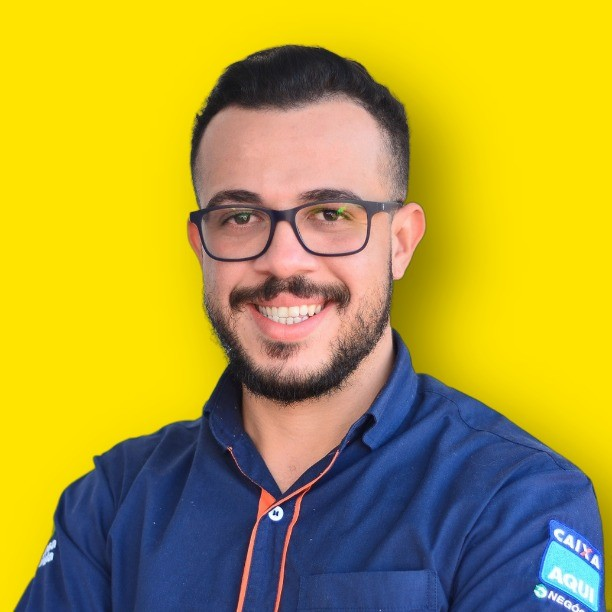

Quién está detrás de Medio Web
Soy Irani Lourenço, brasileño residente en Madrid, técnico de soporte de TI y estudiante de ASIR (Administración de Sistemas Informáticos en Red).
Con Medio Web, pongo mis conocimientos al servicio de pequeños negocios que necesitan una presencia online clara y funcional, con un trato cercano y sin tecnicismos.
Cuéntame tu proyectoDel soporte técnico al desarrollo web
Mi experiencia combina la atención a usuarios con el trabajo técnico en sistemas y aplicaciones web. En Grupo DM10, en São Paulo, trabajé primero como becario en desarrollo de sistemas y después como analista de soporte de TI.
Durante esa etapa participé en pruebas funcionales, resolución de incidencias, documentación de problemas y soluciones, y gestión de bases de datos SQL. También trabajé en desarrollo web e integración entre front-end y back-end.
Esa trayectoria me permitió conocer tanto la parte técnica como las dificultades reales que las personas encuentran al usar una herramienta digital.
Conocimientos que aporto a cada proyecto
- Desarrollo web: HTML, CSS, JavaScript, PHP, Python y Angular.
- Datos e integraciones: bases de datos SQL y consumo de APIs REST con JSON.
- Pruebas y mantenimiento: pruebas funcionales, identificación de errores y mantenimiento de aplicaciones web.
- Control de versiones: Git.
- Soporte: atención al usuario, resolución de incidencias y documentación técnica.
Una formación que sigue creciendo
Actualmente curso Administración de Sistemas Informáticos en Red (ASIR) en thePower, para ampliar mi formación en sistemas y redes.
Mi idioma nativo es el portugués. Tengo nivel conversacional de español e inglés, lo que me permite trabajar con clientes y documentación en los tres idiomas.
¿Hablamos?
Si necesitas una página web, una tienda online o un sistema a medida, cuéntame tu idea. Respondo en menos de 24 horas.
Pedir presupuesto